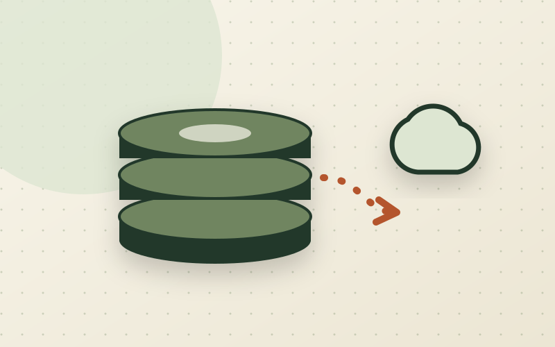

Let the updates run
Most attacks use a hole that was fixed months ago. Restart when it asks, even in the middle of a good film.
Four boring habits that stop most malware.
My laptop is three years old and I have never had a virus on it. I am not careful in a special way, I just do the same four things every month. None of them are fun, and that is sort of the point. Malware usually needs me to ignore an update or plug in a random USB stick, so I stopped doing both.
Most attacks use a hole that was fixed months ago. Restart when it asks, even in the middle of a good film.

Built-in protection is fine for a student laptop. Turning it off to make games run faster is how people get in trouble.

A backup you have never opened is a guess. I restored one folder last term and found out my drive was empty.

A free USB stick in a car park is not a gift. I plug in nothing I did not buy myself.